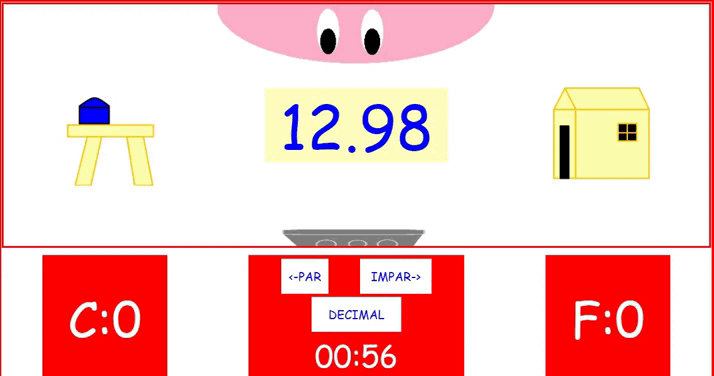

ahora que estamos en mi casa, ¿que tal si me ayudas con algo?, tengo algunas tablas en el cobertiso y necesito tener mas espacio porque son muchas
no te preocupes por la medida ya tengo registrada en cada tabla, solo necesito que me digas cual es par o impar o decimal, los impares van al cobertiso y los pares los utilisares para costruir otro cobertiso, pero los decimales son tirados a la basura
si necesitas saber mas puedes consultar en mi libro
CONSEJO
solo utiliza el ultimo numero osea la unidad (si has visto la descomposicion de numeros)
los decimales siempres tienen un punto o una coma

Los números decimales son números que tienen una parte entera y una parte decimal. Se usan para representar números que son más pequeños que la unidad.
Se escriben con un separador decimal, que normalmente es un punto (.) o una coma (,).
Los dígitos después del separador decimal se llaman décimas, centésimas, milésimas, etc.
Los dígitos cero después del separador decimal indican la precisión de un valor.
Los decimales no son números pares o impares porque no son números enteros. Los números pares son aquellos que se pueden dividir en dos partes iguales, es decir, que tienen como múltiplo al número dos.